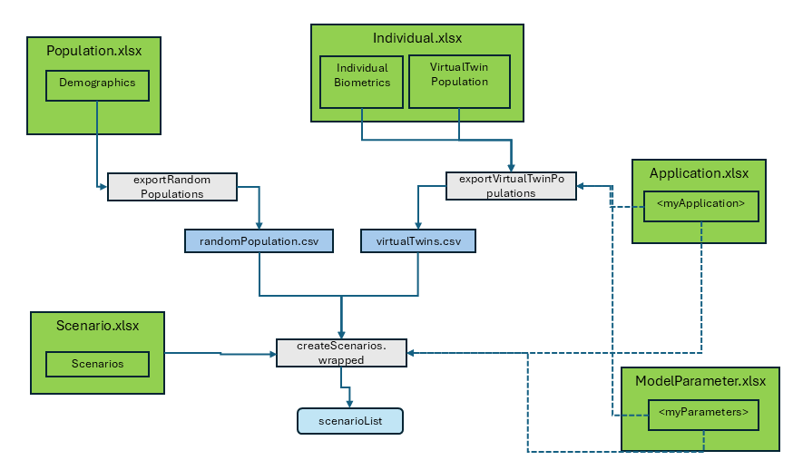

Population
Understanding Random and Virtual Twin Populations in OSPSuite Reporting Framework
Population.Rmd
library(ospsuite.reportingframework)
options(rmarkdown.html_vignette.check_title = FALSE)
The package recognizes two kinds of populations:
Random Population
This population is created from ranges of population characteristics, such as age and body weight, along with a set of parameters defined by a distribution. A set of n individuals are then generated randomly within the given ranges. This is how a population is defined in the OSPSuite context.
The ‘Random Population’ can be configured using the
Demographics sheet in the Population.xlsx. The
population identifier is specified in the column
PopulationName. For each population, a sheet named after
the population name with distributed parameters can be provided.
The package ospsuite.reportingframework includes a
function, exportRandomPopulations, to export the population
as a CSV file, which is then saved in
<rootdirectory>/Models/Populations. See the function
help for more details.
In the scenario setup, you can use the PopulationName as
PopulationId and set the column
ReadPopulationFromCSV to 1 (TRUE). (With
ReadPopulationFromCSV = 0 (FALSE), the population will be
generated anew during the scenario setup. The usage of the distributed
parameters is not yet implemented this way; only the demographics will
be considered. Additionally, since it is currently not possible to set a
seed, each scenario setup will produce a new population.)
Virtual Twin Population
Virtual twins are simulated populations that closely mirror the characteristics of your observed data. They consist of a collection of individuals generated with the known biometrics extracted from the observed data. For all unknown parameters, the mean value of an individual defined by these characteristics is used.
During the data import via the
readObservedDataByDictionary function, a sheet named
VirtualTwinPopulation is added to the
Individual.xlsx with the following columns:
-
PopulationName: Identifier for the population. -
DataGroups: List of data groups (used for informational purposes only). -
IndividualId: Identifier of the individual, referencing theIndividualIdof the observed data and linking to theIndividual.xlsx. -
ModelParameterSheets: Reference to the sheet inModelParameters.xlsx. -
ApplicationProtocol: Reference to the sheet inApplicationProtocol.xlsx.
If you do not use readObservedDataByDictionary for data
import, you can add the sheet by calling
setupVirtualTwinPopConfig(projectConfiguration, dataObserved),
which configures the virtual twin population based on the observed
data.
With this sheet, you define which individuals belong to which virtual
population. The configuration of the individuals is saved in the tables
Individual.xlsx, ModelParameters.xlsx, and
ApplicationProtocol.xlsx.
The function exportVirtualTwinPopulations is called to
export this population to a CSV table in
<rootdirectory>/Models/Populations. It includes an
additional column, ObservedIndividualId, which contains the
individual identifier which relates to the observed data.
The scenario setup is the same as for the ‘Random Population’: use
the PopulationName as ‘PopulationId’ and set the column
‘ReadPopulationFromCSV’ to TRUE. Note that
ReadPopulationFromCSV = FALSE is not possible for this type
of population.
If the same parameters are addressed by the Population and the Scenario setup (e.g., by referencing different ModelParameter sheets), the scenario setup will overwrite the setup of the population.